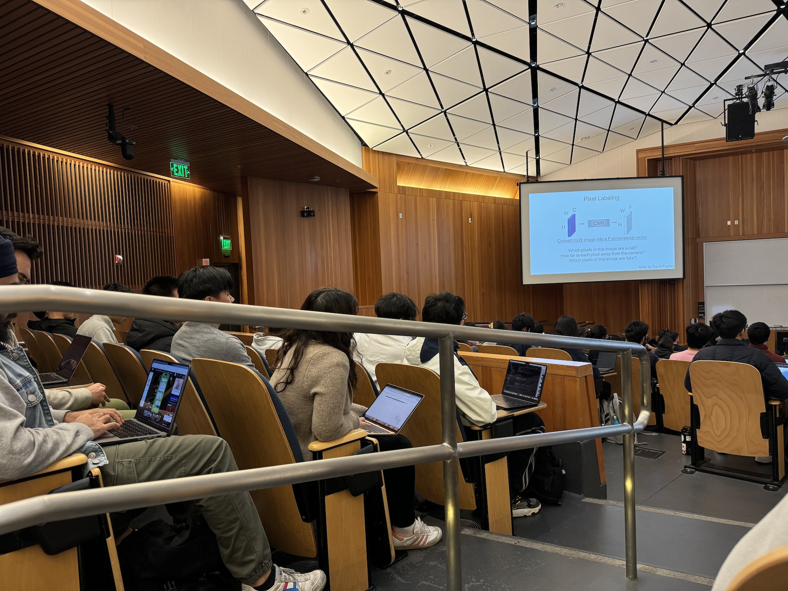
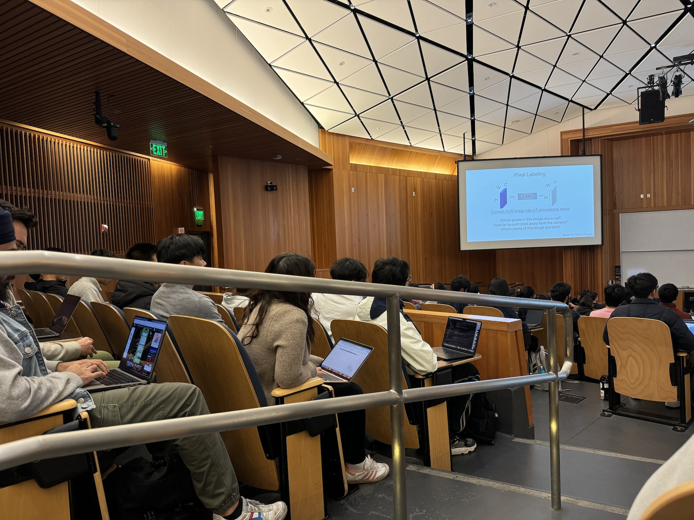

CS180 Project 4A
Image Warping & Mosaicing
Kevin Yee
Overview
In this project, we're basically warping images in a similar manner to ProCreate's perspective transform functionality, where it's basically kinda like an art/perspective principle being played out.
Part 1: Shoot and Digitize Pictures
So for this part I bascially just took some screenshots in Minecraft since I didn't want to take pictures in real life. <- that was part A, ended up needing to take some pictures for part B


 

Part 2: Recover Homographies
So this was intresting, basically a giant linear algebra setup and payoff, solving a big 'ol matrix. What I basically did was just setup the matrix, doing something like the following:
A.append([x, y, 1, 0, 0, 0, -x_prime * x, -x_prime * y, -x_prime]), as well as the other line starting with 0 0 0,
which was done by iterating over the input n-by-2 matrices, and then I used the smallest row of SVD V^T from the matrix (A) that I built up, reshaped it, normalized it, and returned it. I figured SVD would be easier since I could basically
"sledgehammer" every matrix that came my way when I used it, no rank-deficient things or anything like that.

Part 3: Warp the Images
Using the resultant homography matrix from the previous section, this function basically that, and uses it to create an inverse mapping
to calculate where each pixel in the output came from in the input image, with some interpolation if color values are weird. So the workflow is basically:
Create coordinate grid of where every pixel is going to go;
Convert coordinates into homogenous coordinates (and then normalize back to 2D later);
Inverse homography to map each pixel in output image back to corresponding location in input image;
Interpolate;
And then do a bit of extra processing
I think I should've chosen a few more points or something to fix the weird things on the side but I lost my tab where I had all the correspondences but I don't want to have to find them again
Image Rectification
So I tried rectifying an image, the same one showed in class the flagellation painting, and I got the following result for the floor


I might've misclicked a bit with since I don't have things perfectly aligned.
Part 4:Blend Images into a Moasic
To blend the images, I removed the alpha channel which I think was causing dimensional issues with things huge pain to debug, followed by computing an alpha mask, which is basically something like a weighting of the pixels made dependent on how close it is from the center of the image. So I warp the second image as is usual, followed by the blending of the image, divided into two distinct regions, where it overlaps, and where it doesn't overlap. Where it overlaps, the alpha mask gradient is used, and where it doesn't overlap, only the second image is used. This was intended to have a smoothing affect. Since the images aren't quite perfectly aligned, there's some ghosting where there's overlap.

CS180 Project 4B
Part 1: Corner Detection
So I basically shamelessly stole the provided Harris Interest Point Detector which was provided to us, and used it. The results aren't too interesting because most often they're just a red square.
If I understand things correctly, at a high level (from lecture at least), when the professor was explaining it with the moving a square over lines and stuff like that, it's basically detecting where there's a lot of intensity
change in multiple directions. The function we have basically just calls the skimage.feature.corner_harris function to get the Harris response for each pixel in the image.
Then, using the peak_local_max, it extracts the coords of the local maxima in the Harris response matrix (h) which should be the potential corners in the image.

Part 2: Adaptive Non-Maximal Suppression
So, Adaptive Non-Maximal Supression: At a high level, I'm inclined to believe that it's something like the following: getting the "best" corners from the Harris set we just ran.
The way this is done is something like: Supressing corners that are close to a stronger corner, and then only getting the top dog corners based off of their "supression radius", which tells
how far each corner is from a stronger corner that's near it. This ensures that the resultant corners are locally strong, and also spaced out to ensure that not everything is all clustered in one spot.
This is done very naively in my code by simply grabbing all of the corners from the Harris corner detection set, iterating over all of them getting the corner strength,
and for each corner i, iterate over all other corners and check if corner j is stronger than corner i and also calculate the euclidian distance between them. If this distance is less than the current suppression radius,
it updates the radius for corner i to the calculated distance. This distance is basically the nearest stronger corner that suppresses corner i.
After all that, they're sorted in descending order, and the top n are selected (I chose 500 for more corners).
Part 3: Feature Descriptor
So the feature descriptor basically takes the points and gets a 40x40 patch around them, downsamples it into an 8x8 patch, and then normalizes bias/gain (average value = 0/variance = 1 which allows for the patch to be robust to changes in contrast & lighting. It's flattened into a 1D vector (for ease of comparison), and then added to the list of descriptors.
See the resultant descriptors, I forgot which this was taken from.
Part 4: Matching Feature Descriptors
To match feature descriptors, the descriptors are compared by identifying pairs with similar characteristics. For each descriptor it finds the indicies of the closest two descriptors based on the smallest and second smallest distances, as the Euclidian distance between each descriptor pair is calculated as well, with the ratio of the nearest & second nearest distances also calculated. If the ratio is below a specific set threshold, then the feature is a good match. So: calculate all distances between all descriptors, apply ratio test/nearest neighbor, return.
Part 5: RANSAC & Robust Homography Estimate
Alright, last step: RANSAC. Basic idea: randomly select subsets of point correspondances to estimage a candidate homography matrix; use candidate homography for transform; evaluate how well this candidate fits by counting inliers, points that are transformed within a threshold error; repeat for a bunch of iterations, getting the best homography with the most inliers that fit.
Results for RANSAC inliers
And then lastly, the homography. Most of the results aren't quite perfect since I think I might've messed up with taking the photos, but I think they generally show that it works (I hope).